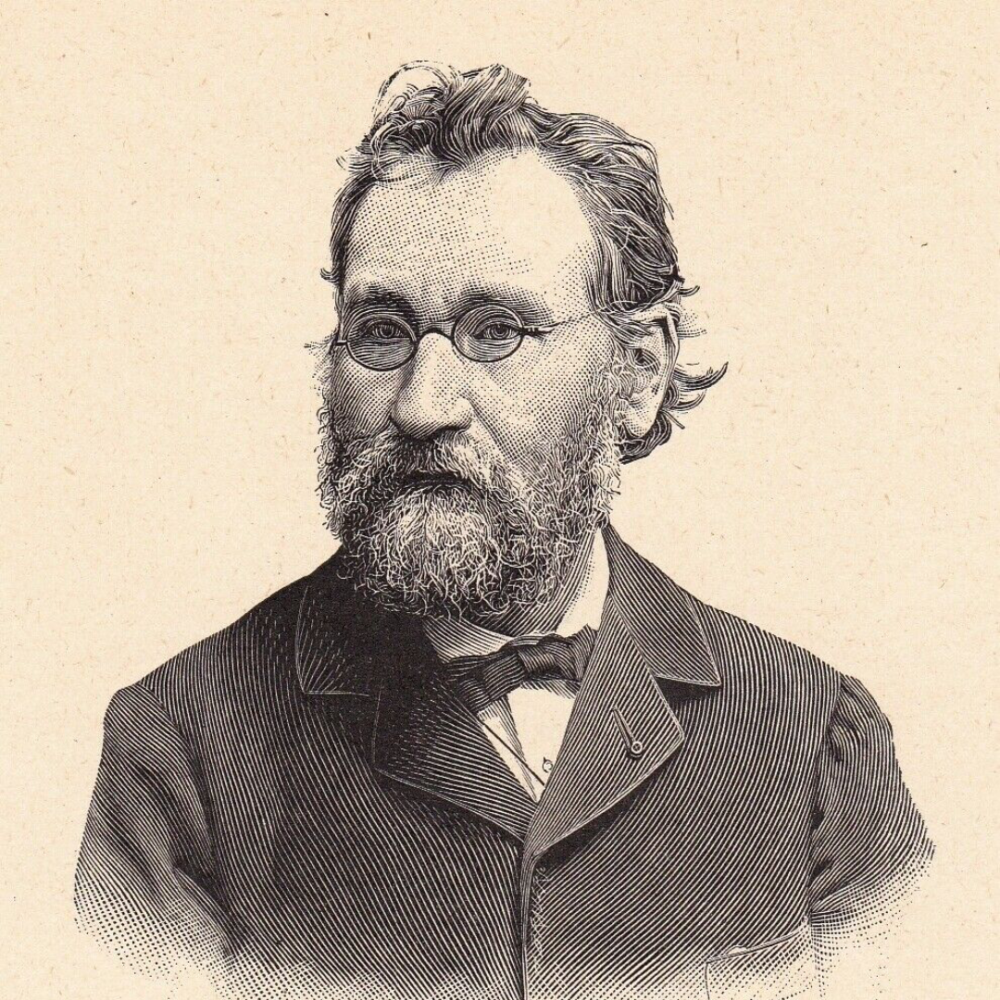

Born in 1845 in the Russian empire, Elie Metchnikoff trained as a zoologist. Zoology as a study was a lot narrower at the time than it is now, it was largely the observation of simple organisms and embryo dissection rather than later behavioural and genetics studies. The habit of observation in these organisms would convince him he could defeat death, but first it nearly cost him his life.
Metchnikoff, devastated by the loss of his wife in 1873, attempted suicide, overdosing on opium. He survived. Years later, when his second wife became ill and when his eyesight was failing, he injected himself with relapsing fever, framing it as an experiment to see whether the disease transmits through blood. He survived this too. As he recovered and when his eyesight was restored, so was his despair.
His research continued and in one experiment in 1882, he pushed a rose thorn into a starfish's body, he watched the cells swarm around this wound and engulf the thorn. These were phagocytes; the cells which eat invaders. This new theory allowed him to join the Pasteur Institute in Paris, where he became deputy director.
Metchnikoff turned this idea of phagocytosis onto aging itself, deciding that old age wasn't some inevitable decay but instead, a disease. The same phagocytes are simply invaders, they turn on the body's own cells, eating neurons and tissue and are the reason for what we define as aging; white hair, weakness and senility.
Pinning his arguments on the large intestine, he saw the colon as an evolutionary leftover which poisoned the body from the inside, the bacteria from the waste in the colon poisoned the body and were responsible for aging.
With his theory, what was Metchnikoff's solution? A bacterial fix. He noticed that Bulgarian peasants who drank soured milk seemed to live longer than usual. With his theory, he pinned the lactic-acid bacteria as something which killed the bad bacteria in the gut and ultimately was responsible for extending human life. He became obsessive, taking his hygiene beliefs to excessive measure like boiling bananas after peeling them and passing silverware through flames before using it to be rid of the bacteria.
Metchnikoff from this point, drank sour milk daily. He coined the word 'gerontology' and preached a philosophy he called orthobiosis, believing that with this new revelation, humans would reach their natural lifespan which he contended should be 150 years instead of 75. A heart condition took his life in 1916 where he died at age 71. Although his ideas of phagocytosis remained real and foundational and won him a 1908 Nobel for it, it didn't end up being the path down human longevity he expected.
Did Metchnikoff's beliefs die in vain? Modern researchers have found that gut health matters substantially, fecal transplants gained significance and gut research did evolve, just less dramatically than he imagined. But the man who said we should live to 150 died at 71, of a heart condition he inherited from a family that died young. The body he spent his life trying to outsmart killed him on its own schedule, by something his theory never even took into consideration.